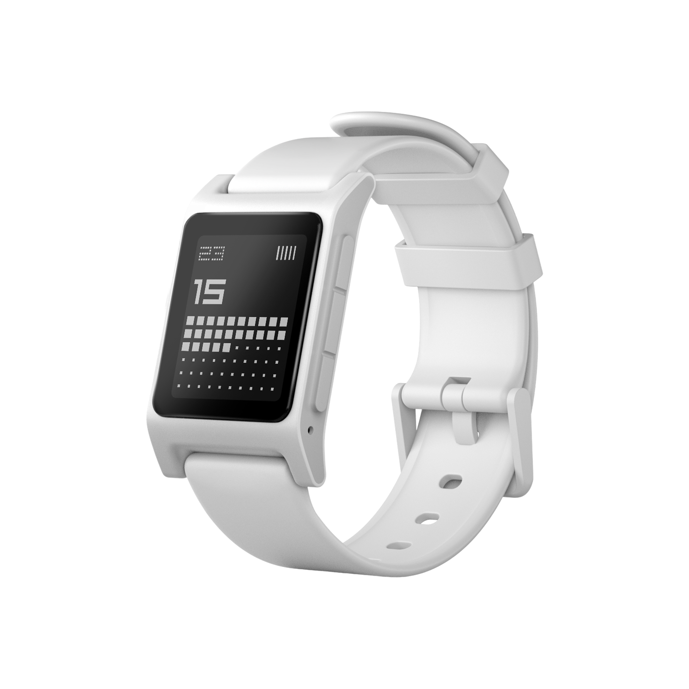

The Watch That Never Died.
Pebble 2 Duo. Nov 25.
A reflection on finally owning the Pebble 2 Duo, a tiny comeback story about detail, nostalgia, and honest design.
A simple white watch with a round face, a crisp display, and physical buttons. It came in a small box. It didn't try to do too much. And that's exactly why it got under my skin.
The Dream from 2013.
I remember the original Pebble Kickstarter. I was too young to back it, but I followed everything. It felt like a glimpse at a different kind of future—one where your tech didn't demand your attention, it waited for you. A watch that showed notifications. A watch with a week of battery. That felt radical.
Then Pebble was acquired by Fitbit in 2016, and that was it. Or so I thought.

Pebble 2 Duo.
Media: store.repebble.com
Buying from the Revival.
The Pebble 2 Duo came from repebble.com, a community revival store. It's not an official product. It's a labor of love from people who refused to let it die. And the product itself reflects that—it's small, honest, and a little rough around the edges in ways that make it more interesting, not less.
Credit Where It's Due.
The revival was made possible by the community that kept the firmware alive and eventually open-sourced it. When Google acquired Fitbit, the Pebble IP went with it—but the community had already moved. Rebble handles cloud services, repebble handles hardware, and the result is a watch that still works in 2025 and still feels like it belongs.
A Story That Didn't End.
What's interesting is that the Pebble's story has this arc—death, then slow resurrection. It wasn't acquired by a venture firm and rebuilt as a premium product. It was kept alive by users. The people who cared most about what it stood for took care of it. That's rare.
Still a Joy to Use.
The display is sharp. The buttons click well. The battery lasts a week without effort. It doesn't have an app for everything, and that's fine. Notifications, time, a few timers. The interface is fast because it's lightweight. It does fewer things and it does them well. That's a design philosophy I can get behind.
More Than a Watch.
Wearing the Pebble 2 Duo is a statement. It says you prefer clarity over spectacle, and function over status. It says you remember that good design doesn't require the latest silicon. It says something about how you value your attention.
And honestly? That's a more interesting conversation starter than almost any Apple Watch I've seen.
Takeaway.
Some products don't die because they were built with something that doesn't expire—a genuine understanding of what the user actually needs. Not what looks impressive in a keynote, but what works every day, quietly, without asking anything back. The Pebble had that. And apparently, enough people agreed to bring it back.
More in Projects.
Developed intuitive digital cockpits integrating real-time data visualization, driver-centric design, and responsive interfaces.
Crafted native-style widgets for car controls, bringing Apple's clarity and consistency into everyday driving.
Engineered an innovative mobile app simplifying restaurant interactions through streamlined ordering and efficient pickup.
Designed a vibrant digital music experience tailored specifically to the dynamic preferences of new generation.
Built a versatile no-code tool empowering designers to rapidly prototype and share UI components and full websites.
Established a minimalist stationery brand that seamlessly blends functional design and engaging digital storytelling.
More in Nuggets.
More in Readings.
Copyright Maksim Anisimov.